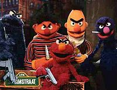
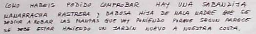
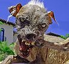

Vecino
 De: La Frikipedia, la enciclopedia extremadamente seria.
De: La Frikipedia, la enciclopedia extremadamente seria.
| De la serie animales y otros bichejos:
|
| 
|
| Vecinos de IP anónima esperandole para pagar la derrama
|
|
| Nombre común:
|
Vecino
|
| Nombre científico:
|
Vecinus metomentodis
|
| Especie:
|
?
|
| Subespecie:
|
SUB ?
|
| Alimentación:
|
No come, se alimenta de los sonidos que ejerce al insultar y maldecirte
|
| Apariencia:
|
Animal pesadoy molesto
|
| Hábitat natural:
|
Tu finca
|
| Localización:
|
Todo el mundo, desgraciadamente
|
| Número aproximado de ejemplares:
|
A 3 por puesrta aprox.
|
| Fecha de extinción:
|
Nunca
|
| Pokemonización:
|
El dia que te cagas en sus muertos le haces entender que es un pesado impertinente de manera directa
|
Caracteristicas
 Pacífica coexistencia vecinal
El vecino es un ser vivo, que forma parte del ecosistema de la vivienda comunitaria. Suele protestar cuando oye ruidos o quejarse de lo que hace cada nuevo propietario que entra en al finca.Hay varios tipos de vecino:
Tipos de vecino
- El coñazo: Que molesta a todas horas por cuestiones como "el ascensor no funciona", "hay que poner bombillas nuevas", "la fachada necesita una pintadita".
- Marujas: Lo que mas abunda, señoras con bata de colores horrendos y gastados, con rulos en la cabeza, que se pasan el día hablando de todo menos de ellas.
- El enano revienta pelotas:niño de 3 a 6 años que no tiene amigos y que (si aun vives con tus padres) te obligan a tratar como tu jodido hermano menor que se encojona por que no quieres jugar a las muñecas por que te parece maricon.
- El Presi: Individuo que debe soportar estoicamente (generalmente durante 1 año) al resto de vecinos que se acercan a su puerta a dar el coñazo.
- El contable: sea lo honrado que sea sera punto de sospechas cuando falta dinero.
- Los que no pagan la comunidad: verdaderos culpables del punto anterior.
- El incógnito: un tío que nadie sabe como se llama, a que se dedica, si tiene familia, solo se sabe en que puerta vive.
- El WAP: Persona que tiene una red WiFi (wireless) y la deja abierta, permitiéndonos bajar porno gratis.
- El amargado: Es aquel que siempre se está peleando con alguien. Suele vivir solo, como mucho con un perro, un gato o un lagarto (éste último mas que nada para identificarse a si mismo).
Un dato sobre su apareamiento
Tu puedes estar cenando con los amigos a las 11 de la noche hablando de lo que sea y molestarle al indeseable
vecino. Eso si, su apareamiento, el cual emite sonidos por el desnulado del tipo ``CARIÑO, HOY TE LA VOY A METER HASTA EL FONDO´´, se supone que no debe molestar.
Ataque del vecino
Suele esperar agazapado en su puta casa guarida esperando el momento que mas gente hay en tu casa para subir con amenazas del tipo llamar a la policia. Es mentira, no se atreve, pero siempre hay algún energúmeno en tu casa que enoja al vecino diciendole cosas como ``NO TE ATREVES´´. Ahi es cuando se atreve... y viene la policía... y no pasa nada.
 Manera que vemos a nuestro vecino cuando se queja de cualquier cosa
Metodos de acabar con el
- METODO A Ni puto caso, el seguirá
dando por culo quejandose, pero a ti acabará por no afectarte
- METODO B Que te pille una noche borracho en el momento que sube a quejarse de que juegas al ajedrez o que estás haciendo un sudoku y el ruido es insoportable. El llamará a la policia sin avisarte de ello tras tu agredirle con lo primero qe has cogido, pero eso si, la hostia que le has dado no se le olvida.
- METODO C Quemar su puerta. consecuencia: llama a la policia (siempre hacen lo mismo, os habéis fijado?)
- METODO D Matarlo. No llamará a la policia, pero te encontraran.
Autor(es):
- Doctor grijander
- ElInventor
- Cibercrank
- Paround
- Mel-o
- Rober vlc
- Gutcuter
- BIONALI
- Morefrikimore
- Spartan Sam 034
Frikipedia 2005-2016, Licencia
GFDL 1.2 - Extraído por FrikiLeaks